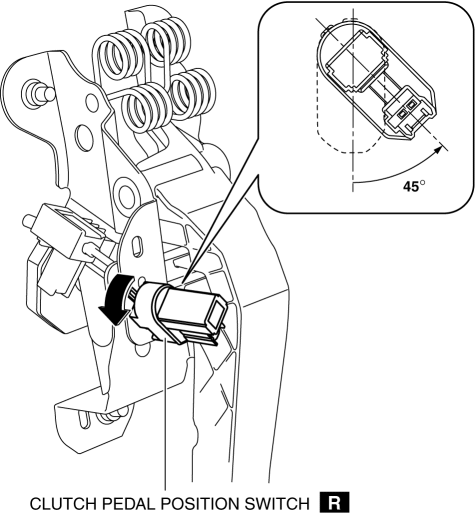
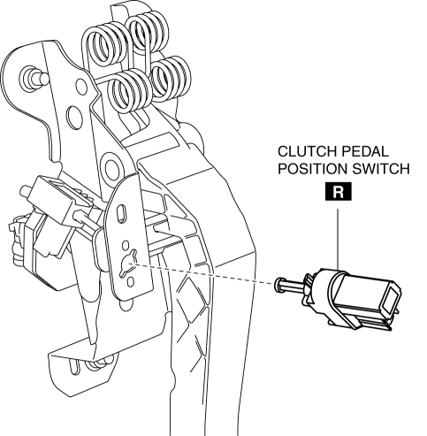
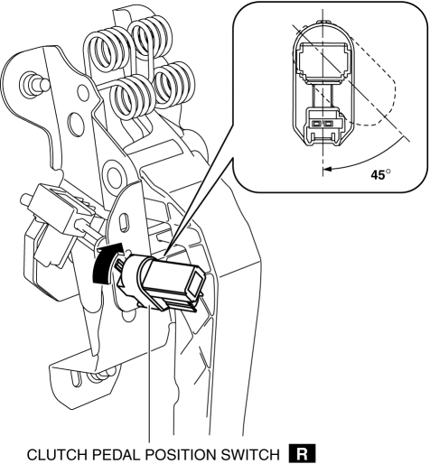

< Previous
Next >
2014 -
Mazda6 -
Transmission/Transaxle
CLUTCH PEDAL POSITION SWITCH REMOVAL/INSTALLATION [C66M-R]
1. Disconnect the negative battery cable. (See NEGATIVE BATTERY CABLE DISCONNECTION/CONNECTION [SKYACTIV-G 2.5].)
2. Disconnect the clutch pedal position switch connector.
3. Rotate the clutch pedal position switch 45° counterclockwise.

4. Remove the clutch pedal position switch from the clutch pedal.

5. Insert a new clutch pedal position switch into the clutch pedal hole until the switch stops.
6. Rotate the clutch pedal position switch 45° clockwise.

7. Verify that the clutch pedal position switch is locked securely.
8. Connect the clutch pedal position switch connector.
9. Connect the negative battery cable. (See NEGATIVE BATTERY CABLE DISCONNECTION/CONNECTION [SKYACTIV-G 2.5].)
< Previous
Next >
© 2012 Mazda North American Operations, U.S.A.